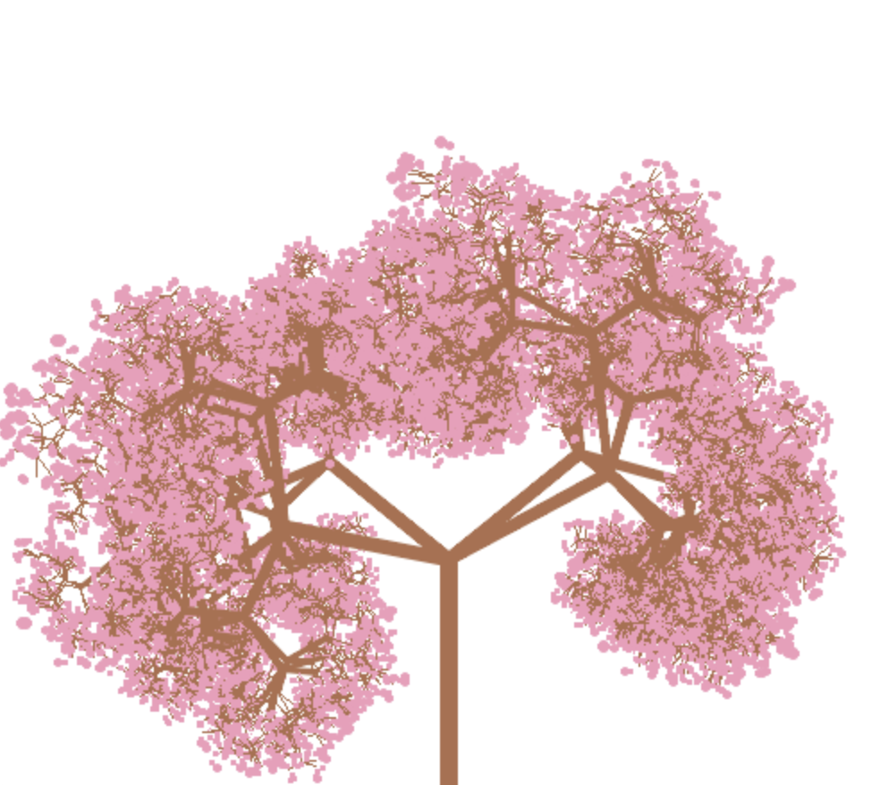
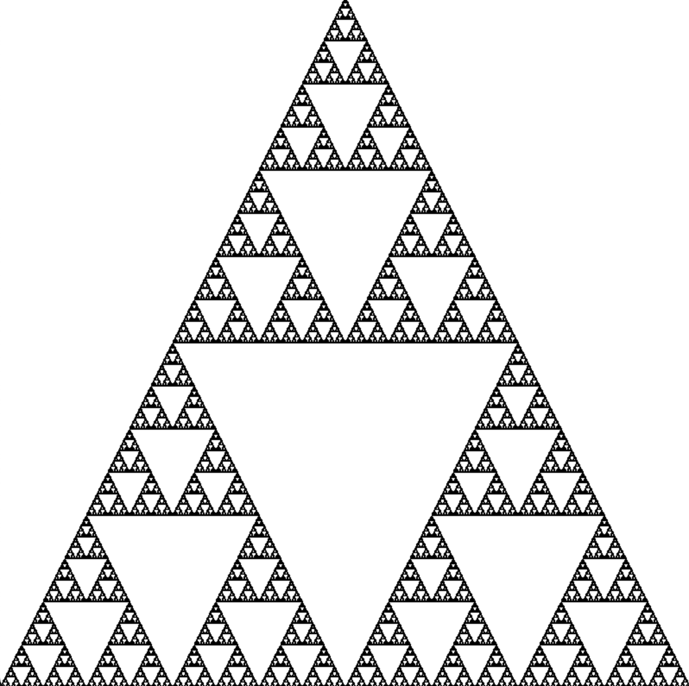
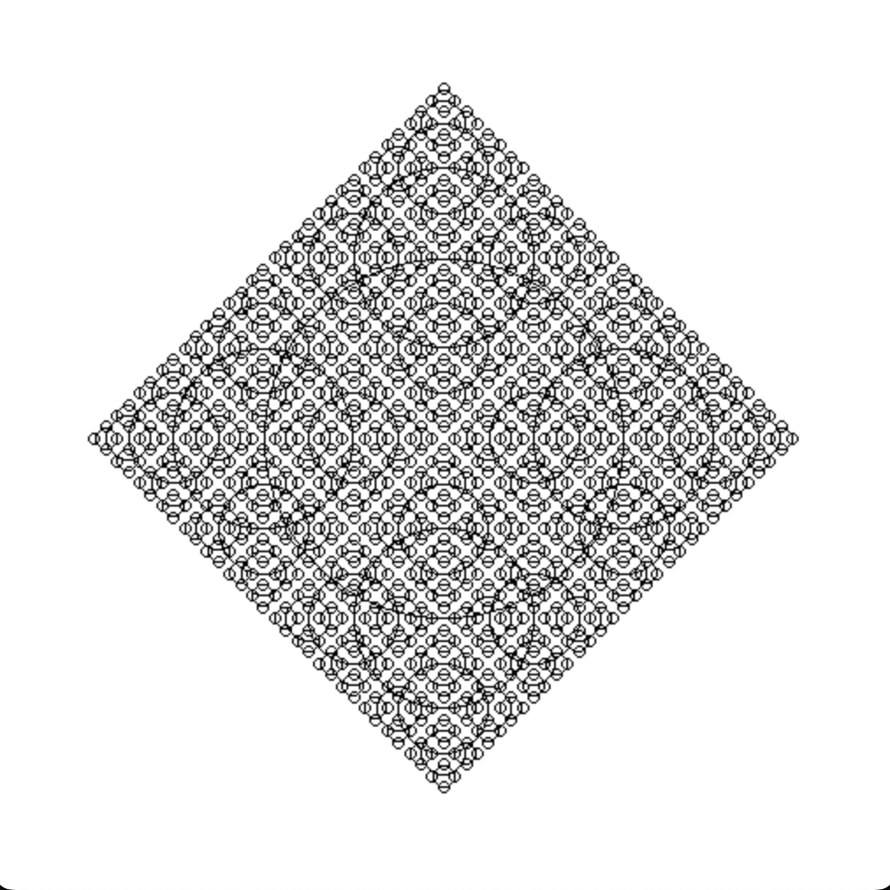

|
|
All the projects on this page use the concept of recursion in programming to create visual art pieces. Each project demonstrates how mathematical principles and recursion can create complex and beautiful designs with relatively little code.
This project uses recursion to generate a fractal tree that resembles a cherry blossom tree. By recursively dividing and rotating branches, the tree grows outward into a detailed and natural-looking pattern. It generates a different tree every time you run it.
Here is an example of the fractal cherry blossom tree:
The Sierpinski Triangle is a well-known fractal that uses recursion to divide a triangle into smaller equilateral triangles. Each step adds more detail to the pattern, resulting in a self-similar and infinitely complex structure.
Here is an example of the Sierpinski Triangle:
This project creates a mesmerizing fractal pattern using circles. At each step, smaller circles are added recursively around the perimeter of the current circles, resulting in intricate, layered designs.
Here is an example of the recursive circle pattern:
